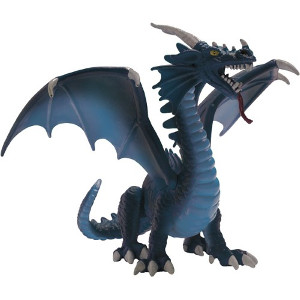

Donjons & Dragons 5e
ajout du livre de contes pour enfant sage et la plume et l'encrier de l'ecrivain du module F : LE LIVRE DU MAL.
Toutes les races du Character Builder sont passées à la version du Monsters of the Multiverse. Seules les races du PH, le loxodon et le forgelier, qui ne sont pas présentes dans ce livre, restent dans leur version originale.
Avant de crier, lisez l'édito du 24 mars ci-contre, puis seulement ensuite vous pouvez aller sur le forum pour râler...
Curieux de savoir à quoi peut ressembler cette « Radiant Citadel » sur le plan éthéré ?
En voici la carte en exclusivité pour MUMU TAPOU !
Wizards vient donc d'annoncer la prochaine sortie pour D&D 5 : Journeys through the Radiant Citadel.
Un recueil de 13 aventures pour PJ de niveaux 1 à 14, dans le style de Candlekeep Mysteries, qui tourne autour de la Citadelle radiante, une cité flottante du plan éthéré.
Les nouveautés pour le Character Builder :
- Fantôme et Coutelâme pour roublard
- l'Insondable pour occultiste
- Gardien de drake pour rôdeur
- le Satyre et le Yuan-ti
- historique d'Agent de faction (SCAG)
- historique de Grand voyageur (SCAG)
Ça y est, comme promis dans l'édito du 6 mars, les bloc de stat des livres de règles D&D 5 (hors aventures donc) ont tous été complétés avec le nom de toutes les capacités (mais pas la description) pour toutes les fiches en anglais, mais aussi maintenant pour toutes les fiches en français.
Plus de 1000 créatures, disponibles dans la base de données MONSTRES.
Première partie d'une étude statistique sur les points de vie et la CA de plus de 600 créatures de D&D 5, pour que les MD puissent créer leurs propres monstres tout en restant cohérents avec le game design de D&D 5.
D'autres statistiques viendront et, pourquoi pas, un jour, un outil pour automatiser tout cela.
Voici la traduction du premier Unearthed Arcana de l'année qui présente des options de personnages pour l'univers de Dragonlance :
- la race de kender
- la Magie lunaire pour ensorceleur
- les historiques de Chevalier de Solamnia et de Mage de la Haute sorcellerie
- 10 nouveaux dons.
Vous souhaitez soutenir MUMU TAPOU ?
Participez à notre partenariat avec Brave. Pour ceux qui ont installé le navigateur, sachez qu'MUMU TAPOU n'obtiendra un reward que si vous utilisez Brave au moins une fois plus d'un mois après son installation. Télécharger et installer le navigateur ne suffit pas à conclure le deal. Merci pour votre soutien.
4 nouvelles battlemaps d'extérieur :
- un cercle de druides
- un désert
- une forêt magique
- un marais
1 nouvelle battlemap d'intérieur :
- un fortin attaqué par des créatures
Les statistiques de fréquentation du site pour le mois de février 2022.
Les statistiques du Character Builder, basées sur plus de 30 000 feuilles de personnages en ligne.
Le compte Twitter d'MUMU TAPOU, qui permet de suivre les mises à jour du site, dépasse les 1750 abonnés.
L'Online Assistant dépasse les 490 tables ouvertes (toutes ne sont pas jouées).
Un nouveau Starter Set D&D 5 est annoncé pour 2022 dans une vidéo d'Hasbro. L'aventure jointe s'intitule « Dragons of Stormwreck Isle », avec un dragon bleu après le vert et le blanc des deux premières boites.
Pas plus d'infos pour le moment, notamment sur la version des règles qui y seront présentées, ni aucune date précise. Sera-ce un avant gout de D&D 6 ou pas du tout ?
Edit : Wizards a démenti le prix de $49.99 annoncé par Hasbro.
Édito
Le Character Builder adopte le Monsters of the Multiverse
Ça y est, toutes les races du Character Builder sont passées à la version du Monsters of the Multiverse quand cela était possible. Seules les races du PH, le loxodon et le forgelier, qui ne sont pas présentes dans ce livre, restent dans leur version originale. Les changement sont principalement pour tous les bonus de caractéristiques libres (+2/+1 ou +1/+1/+1), le commun + une langue au choix, et une vitesse de 9 m. Et puis quelques traits par-ci par-là qui diffèrent.
Alors je sais bien que ça ne va pas plaire à tout le monde, mais que voulez vous, c'est la version officielle maintenant et je n'ai aucune envie de gérer deux versions pour chaque race. C'est la même chose pour tout, personne ne joue à D&D de la même manière. Certains veulent plus de fantasy, d'autres moins. Certains veulent plus de settings, d'autres plus d'options de personnages. Certains veulent plus de polyvalence, d'autres plus de stéréotypes.
Dites-vous seulement que le Volo et le Mordenkainen ont peu de chance de sortir un jour en français, alors que le Monsters of the Multiverse...
blueace, 24/03/2022

Outils D&D 5
Découvrez toutes les applications en ligne qu'MUMU TAPOU propose gratuitement pour faciliter la vie des joueurs et du MD.
Téléchargements
Téléchargez la traduction française autorisée par WotC des Basic Rules de D&D 5. De nombreux autres téléchargements sont disponibles !
Basic Rules D&D 5
20/12/21
Printer Friendly
20/12/21
Partenariat
Brave (navigateur 2021 préféré de la rédac de CLUBIC) est un navigateur web construit sur la base de l'open source de Google Chrome. Plus sécurisé et plus respectueux de la vie privée des utilisateurs, il permet de surfer sur internet plus rapidement, sans publicité ou avec des publicités choisies qui vous font gagner des BAT, une cryto- monnaie. Ces BAT peuvent ensuite être reversés aux sites que vous fréquentez et que vous voulez récompenser. Si vous êtes tenté par l'expérience, cliquez sur ce lien (sponsorisé) :
Télécharger le navigateur Brave
MUMU TAPOU
MUMU TAPOU est un site qui parle du jeu de rôle médiéval fantastique Dungeons & Dragons depuis août 2000, et exclusivement de sa 5ème édition depuis fin 2013.
D&D 5. News officielles de WotC, présentation des livres, des suppléments et des romans de la gamme D&D 5, traductions d'articles des rubriques Unearthed Arcana et Sage Advice de WotC et du site D&D Beyond, quiz.
Règles. Création de personnages, races, classes, historiques, équipement, dons, multiclassage, combat, magie, sorts, conditions, créatures, objets magiques : toutes les règles dont vous avez besoin pour jouer à D&D 5 en français.
Aides de jeu. Test d'alignement, scénarios clé en main, feuille de personnage, Character Builder, Online Assistant (VTT) : pleins d'aides de jeu à consulter ou à télécharger et d'outils informatiques pour faciliter la vie des joueurs et du MD.
Univers. Plans, panthéon, histoire, géographie, organisations, écologie des monstres : un univers complet et détaillé basé sur les Royaumes Oubliés et la ville de Laelith pour situer les aventures de vos joueurs.
Site. Anciens éditos, statistiques de fréquentation, livre d'or, formulaire de contact pour joindre l'équipe, revue de presse, plateformes utilisées : l'essentiel des infos sur la vie du site.
Forum. Pour parler de Dungeons & Dragons 5, dissiper vos doutes sur un point de règle particulier, répondre à vos questions sur l'univers présenté et jouer en ligne avec d'autres membres de la communauté.
Dungeons & Dragons 5 est publié par Wizards of the Coast et traduit en français de 2014 à 2019 par Black Book Éditions, de 2020 à 2021 par Asmodée et à partir de juin 2021 par Wizards of the Coast FR.
This website is unofficial Fan Content permitted under the Fan Content Policy. Not approved/endorsed by Wizards. Portions of the materials used are property of Wizards of the Coast. ©Wizards of the Coast LLC.